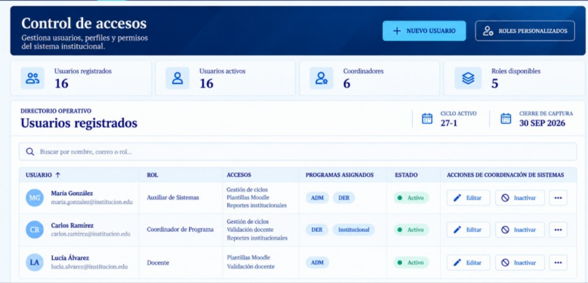
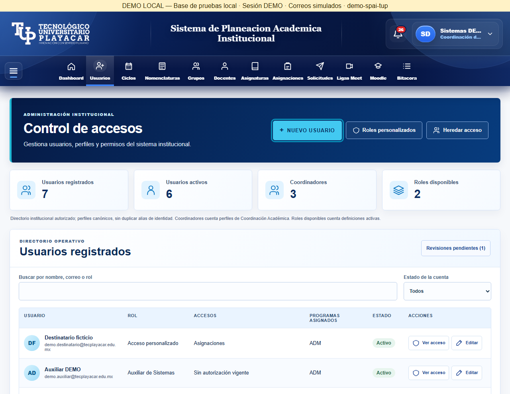

Ambas imágenes se muestran al mismo ancho, manteniendo sus proporciones y sin recortar. El resultado se capturó a 1280 px de ancho y 960 px de viewport; las capturas completas pueden tener más altura. Las referencias tienen dimensiones originales distintas; esto permite comparar composición, no afirmar identidad píxel a píxel.
Referencia proporcionada
Resultado actual · 1280 px
Roles, módulos y adaptación
La guía se convierte en cuatro pasos superiores en móvil. Se conserva scroll interno y pie de acciones; la tabla de personas utiliza desplazamiento horizontal propio.
Diferencias deliberadas: navegación global conservada; campos, módulos y avisos reales adicionales; no se inventa ciclo, paginación, descripción persistida de rol ni acciones ajenas al alcance. La aprobación visual corresponde al propietario.
Informe de validación y recorrido manual